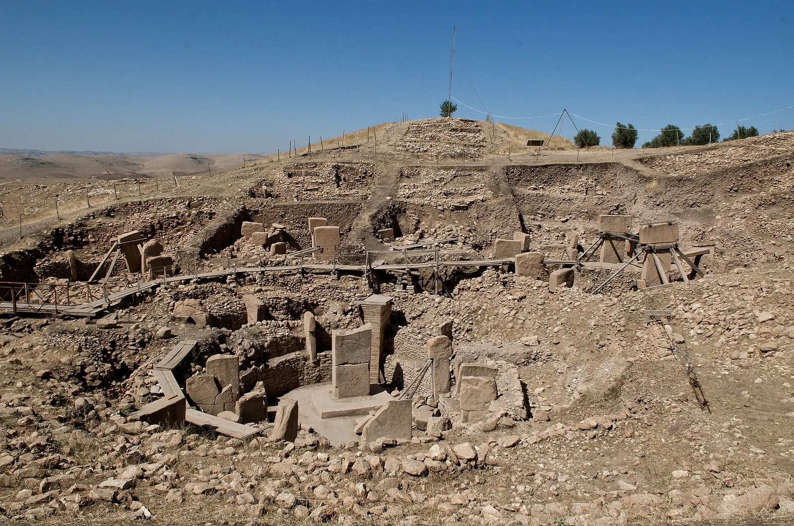

Göbekli Tepe: The World's Oldest Temple and the Mystery of Who Built It

Image: Teomancimit, CC BY-SA 3.0, via Wikimedia Commons
In the rolling limestone hills of southeastern Turkey, about twelve kilometers northeast of the city of Şanlıurfa, there is a low, round mound. To a visitor who does not know better, it looks like an ordinary bump in the land. But under that mound lies one of the great discoveries in human history.
It is a huge group of stone enclosures built about 11,600 years ago, around 9600 BCE. This was during a time called the Pre-Pottery Neolithic A, when people had not yet made pottery. The place is called Göbekli Tepe. It is the oldest known temple in the world.
Its giant T-shaped limestone pillars are arranged in great circles. Some stand more than 5.5 meters tall and weigh up to ten metric tons. They are carved with animals: foxes, boars, snakes, scorpions, vultures, lions, and gazelles.
Göbekli Tepe is about six thousand years older than Stonehenge. It is about seven thousand years older than the Egyptian pyramids. The people who built it had no farming, no pottery, no metal tools, and no wheel. They were hunter-gatherers. Somehow they organized themselves to cut, move, carve, and raise huge stones. Nothing like it would be built again for thousands of years. After they used it, they buried it on purpose.
The discovery has changed how we see early humans. For a long time, experts believed that organized religion and great buildings came from farming societies. At Göbekli Tepe, it seems that religion came first. Farming may have come after.
Before this discovery, the main story of human civilization went like this. The Neolithic Revolution was the change from hunting and gathering to farming and living in one place. It was thought to come before everything else: cities, temples, writing, kings, and organized religion. The idea seemed sensible. Only farming villages with extra food could support workers who did not grow food themselves.
Göbekli Tepe broke that story. Here was a great holy place built by people who had not yet tamed a single plant or animal. The German archaeologist Klaus Schmidt (1953–2014) discovered its importance. He had a bold idea. Perhaps farming did not make religion possible. Perhaps religion pushed people to start farming.
Many people gathered to build the site and hold ceremonies. They needed to eat. That need may have led them to grow wild grains on purpose. Those were the first steps toward farming, which would change humanity.
The site’s story as a place for research began in 1963. A team from the University of Chicago and Istanbul University was surveying sites in southeastern Turkey. They noted the mound and wrote it down in their records. But they decided it was a medieval graveyard. They saw broken pieces of limestone on the surface and did not see what they meant. The mound sat quiet for about thirty more years.
In 1994, Klaus Schmidt was reading the old Chicago survey records. He worked with the German Archaeological Institute (DAI), and he was studying prehistoric sites in the area. He had just finished work at a nearby Neolithic site called Nevalı Çori. There, in the 1980s, people had found T-shaped limestone pillars. They were the first ever found.
Schmidt read the note about limestone pieces on the surface of Göbekli Tepe. He guessed at once that there might be similar buildings there. He went to the mound and looked at what lay on the ground. Within minutes, he knew that the flint tools and limestone pieces did not come from the Middle Ages. They came from the Pre-Pottery Neolithic. That was thousands of years earlier than anyone had thought possible for such big buildings.
Schmidt began digging in 1995. He worked with a team from the German Archaeological Institute and Turkish archaeologists. What they found over the next years was beyond his wildest hopes.
Under the mound lay a set of large round enclosures. Each was marked by a ring of huge T-shaped limestone pillars set into stone walls. The biggest pillars stood in pairs at the center. Smaller ones stood around the edge.
The pillars were carved with pictures of animals, abstract signs, and, in some cases, what seem to be human features. There are arms, hands, belts, and loincloths. The work was excellent, even though the carvers had only stone tools. No metal tools existed then.
Schmidt’s team found four main enclosures. They named them Enclosures A to D. Surveys of the ground using special equipment, called geophysical surveys, suggest that up to twenty more may lie buried. The site covers about nine hectares, or about 22 acres. It was a large holy place.
Schmidt spent the rest of his life on Göbekli Tepe. He led the digs until he died in 2014. His work helped the site become a UNESCO World Heritage Site in 2018.
At the heart of the site are the great circular enclosures. Each has a ring of huge T-shaped pillars around two even larger pillars in the middle. Surveys have found at least twenty enclosures. But only about ten percent of the site has been dug up.
Enclosure D is the largest and most impressive. It has two central pillars, each about 5.5 meters tall. They are covered with detailed carvings. One shows a fox, and the other a boar. Both have stylized human arms and hands along their sides. It is as if the pillars themselves were simple human figures.
The ring pillars around them show many other animals. The carvings are sharp and detailed. They suggest the carvers were experienced craftsmen.
Archaeologists have found signs that the enclosures were roofed with timber and earth. The floors were made of polished limestone that looks like terrazzo, a smooth stone floor. That is a surprisingly advanced floor for a people without pottery.
The carvings on the pillars are some of the earliest known pictures of living things in human history. The animals are all wild. They include foxes, wild boars, lions, leopards, snakes, scorpions, vultures, cranes, ducks, spiders, and bulls. There are no sheep, goats, cattle, or dogs. That matches the date, before people kept animals.
The choice of animals, and where they were placed, seems deliberate and meaningful. Some scholars think the animals were clan totems, or spirit animals. Each group may have given a pillar with its own symbolic creature.
Others see a shaman’s view of the world. A shaman is a spiritual healer or guide. Dangerous animals like snakes and scorpions may stand for the underworld. Soaring birds like vultures may stand for the sky. Strong hunters like lions may stand for the earth.
The vultures have drawn special attention. On one pillar in Enclosure D, a vulture spreads its wings. Beside it is what looks like a human figure with no head. Some researchers link this to excarnation. That means leaving a dead body in the open so that scavenging birds clean the bones. Several ancient cultures did this. If the idea is right, Göbekli Tepe may have had a link to rituals for the dead.
Göbekli Tepe’s greatest gift to archaeology may be what it says about the Neolithic Revolution. The old view was that farming gave people extra food. This let big communities grow. They then built monuments, divided up their work, and formed social ranks. But Göbekli Tepe turns that order upside down. Here are great buildings made before farming, before permanent villages, and before any of the social structures once thought necessary.
Schmidt argued that feeding the many workers who built and kept up the site may have led to growing wild grains. The area is full of the wild ancestors of modern wheat. One is einkorn wheat. Genetic studies trace it to the Karacadağ mountains, just thirty kilometers away.
The huge task of building may have pushed hunter-gatherers to find better ways to get food. In time, this led to full farming. In this view, Göbekli Tepe did not come from civilization. It helped cause civilization.
Digs since 2016 have complicated this picture. They found houses, signs of grain processing, a clever water system, and everyday tools. So Göbekli Tepe may have been more of a permanent village than people thought. It may not have been only a holy place visited by wandering pilgrims.
The water system had carved channels that fed cisterns cut into the rock. These could hold at least 150 cubic meters of water. That shows careful planning and people living there for a long time.
The enclosures also seem to have been buried on purpose, again and again. They were filled with soil, stone, and waste before new ones were built on top. This may be why the site is so well preserved after thousands of years. But people still debate the reason. It may have been a ritual to close an old temple. It may have been a wish to keep the holy place safe. Or a change in belief may have meant the old temples had to be hidden before new ones could be built.
The T-shaped pillars are the main feature of Göbekli Tepe. What they mean is one of the most debated questions. About two hundred pillars have been found through digging and surveys. Some are small, about three meters. Giants are over 5.5 meters tall.
Many experts think the pillars show stylized humans. Several clues support this. Many pillars have carved arms and hands down their sides, and the fingers are clear. Some have what look like belts, loincloths, and animal-skin clothes. The top of the T may be a head, drawn in a simple way.
If this is right, each enclosure can be seen as a meeting of stone ancestors or spirit beings. The central pair would be the most important. The ring would be the lesser ones.
The T-shape appears at other sites of the same age in the area. They include Karahan Tepe and Nevalı Çori. All belong to a wider culture called the Taş Tepeler, which means “Stone Hills.” Another idea is that the pillars are world pillars, or axis mundi. These are symbols of a post that connects the earth to the sky. Many ancient myths have this idea.
Only about ten percent of Göbekli Tepe has been dug up. Surveys suggest that most of the site lies buried under the mound. There may be dozens more enclosures. Each digging season brings new surprises and new questions.
The Turkish government treats Göbekli Tepe as a national treasure. It has spent a lot to protect the site. A modern visitor center opened in 2019. Tourists can look down at the enclosures from raised walkways. The site is about fifteen kilometers northeast of Şanlıurfa. You can reach the city by flights from Istanbul and other Turkish cities.
What Göbekli Tepe means for human history is still being written. It shows that hunter-gatherers could organize big projects, divide up skilled work, and make fine art. They did so thousands of years before farming began. It suggests that the urge to build monuments may have helped start farming, and not the other way around. Why did these people build it, and why did they bury it? Nobody knows yet.
References & Further Reading
Wikipedia: Karahan Tepe — The nearby T-pillar site that may be even older than Göbekli Tepe
Editorial note: Archaeological understanding of Göbekli Tepe continues to evolve rapidly as new excavations and analytical techniques yield fresh insights. See our Editorial Policy.